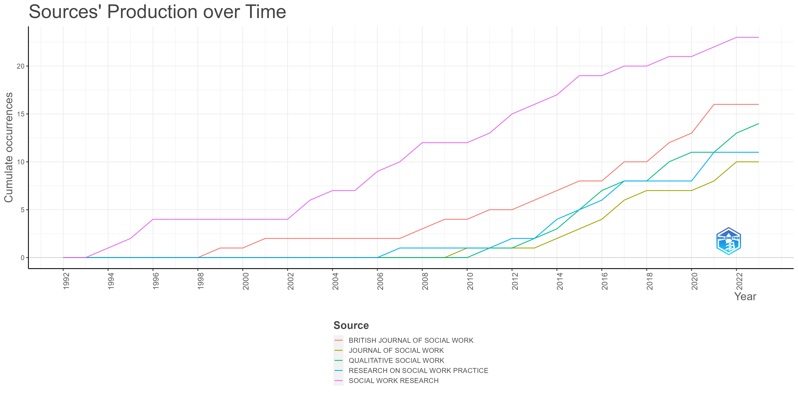
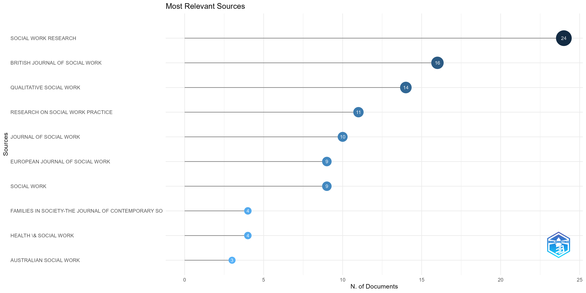
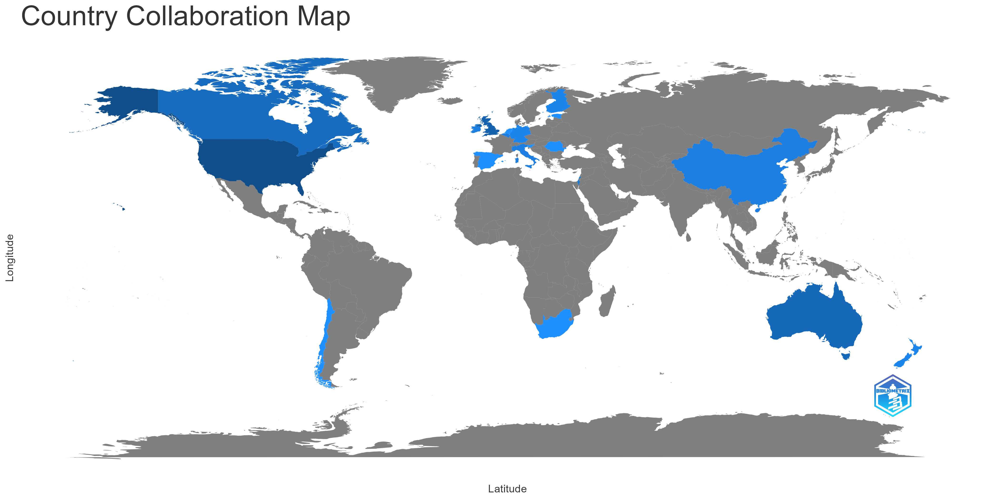
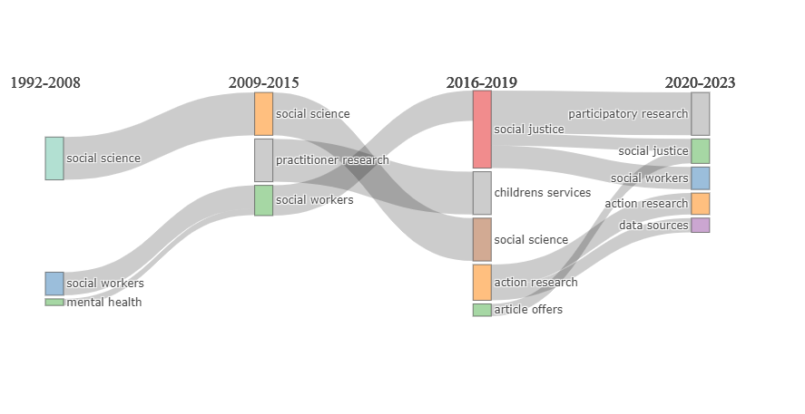
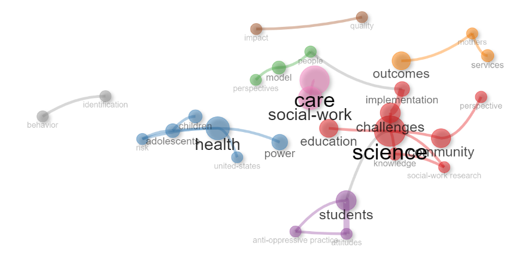
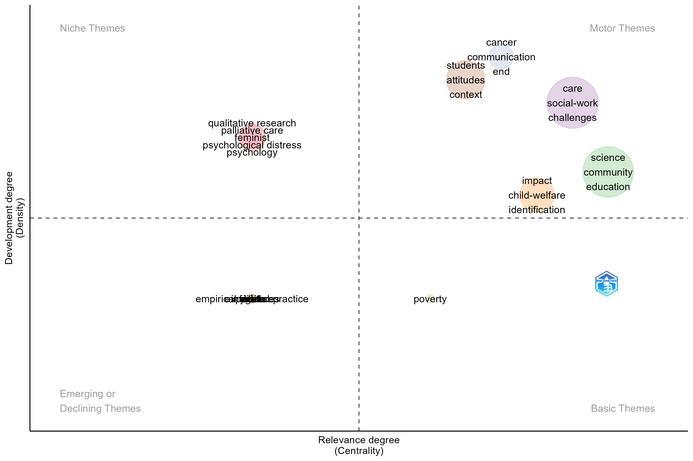
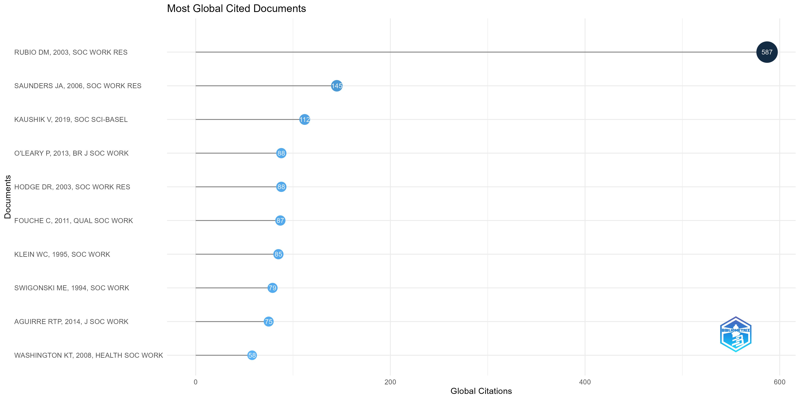

SOCIAL SCIENTISTS FREQUENTLY STUDY COMPLEX CONSTRUCTS. DESPITE THE PLETHORA OF MEASURES FOR THESE CONSTRUCTS, RESEARCHERS MAY NEED TO CREATE THEIR OWN MEASURE FOR A PARTICULAR STUDY. WHEN A MEASURE IS CREATED, PSYCHOMETRIC TESTING IS REQUIRED, AND THE FIRST STEP IS TO STUDY THE CONTENT VALIDITY OF THE MEASURE. THE PURPOSE OF THIS ARTICLE IS TO DEMONSTRATE HOW TO CONDUCT A CONTENT VALIDITY STUDY, INCLUDING HOW TO ELICIT THE MOST FROM A PANEL OF EXPERTS BY COLLECTING SPECIFIC DATA. INSTRUCTIONS ON HOW TO CALCULATE A CONTENT VALIDITY INDEX, FACTORIAL VALIDITY INDEX, AND AN INTERRATER RELIABILITY INDEX AND GUIDE FOR INTERPRETING THESE INDICES ARE INCLUDED. IMPLICATIONS REGARDING THE VALUE OF CONDUCTING A CONTENT VALIDITY STUDY FOR PRACTITIONERS AND RESEARCHERS ARE DISCUSSED.NULL2 title: “Value* AND”Social Work Research”
I guess if values in Social Work Research is something that sets Social Work Research apart from other kind of Social Science, then these values should be evident in Social Work Research.
Also, there should be some methodological oriented literature adressing Social Work Research Values.
The title of this chapter is a search string used in Web of Knowledge 26.02.2023 to kind or explore these hypotheses. The search hits were exported as a bibtex-file, and analyzed using tools in the R-package bibliometrix (Aria and Cuccurullo 2017).
In my quick-and-dirty search I retrieved metadata on 138 documents.
These doucuments is produced from 1992 to 2023, as can be deduced from the following line plot.

The line plot also indicate Social Work Research is a central source. In fact, algorithms indicate it might be the most central journal:
 Although this might be due to the journals name.
The literature is to a large degree Anglo-Saxon:

It is kind of interesting to note that Nordic Social Work Researcher haven’t written much on the subject. This could be due to Social Work Research values being of an universal sort, however maps over cross-country collaboration indicates each country is mostly preoccupied with itself:
The reason why this map is identical with the previous is a lack of cooperation (to few to be marked). The following figure attempts to look out some conceptual continuities in different timeperiods:

In this descriptive model there’s an interesting continuity from “practitioner research” to “children’s services” in the middle. There’s also an “ideological” continuity from “social workers” to “social justice” and to “participatory research”.
Conceptually speaking these are, perhaps, at different poles along an “individualistic focus” and “institutional focus” axis. But this figure need some tons of controlling, which I don’t intend to do here (as of yet).
The next figure looks at co-occurances of concepts:

The most “ideological oriented” concepts seem to be associated with the word “students”, while “children”, “risk” and more is associated with “health”. “services” is associated with “mothers”.

… Poverty seem to be somewhat apart from motor themes, and is categorized as a “basic theme”. There is also some niche teams. Child Welfare is categorized, among other clusters, as a motor theme.
I’m not really sure how to interpret this, apart from noting concepts are not necessarily dependent on each other in the pool of metadata. There could be a bunch of different things going on.
It might be time to focus on some concrete documents, starting with the most globally cited documents:

The most cited documents seem to deal with mainstream (quantitatively oriented) methodological issues. The abstract from Rubio et al. (2003) deals with construct validity:
While Saunders et al. (2006) deal with imputation of missing data:
cat(data[str_detect(data$AU, "SAUNDERS"), "AB"][[1]])CHOOSING THE MOST APPROPRIATE METHOD TO HANDLE MISSING DATA DURING ANALYSES IS ONE OF THE MOST CHALLENGING DECISIONS CONFRONTING RESEARCHERS. OFTEN, MISSING VALUES ARE JUST IGNORED RATHER THAN REPLACED WITH A RELIABLE IMPUTATION METHOD. SIX METHODS OF DATA IMPUTATION WERE USED TO REPLACE MISSING DATA FROM TWO DATA SETS OF VARYING SIZES; THIS ARTICLE EXAMINES THE RESULTS. EACH IMPUTATION METHOD IS DEFINED, AND THE PROS AND CONS OF ITS USE IN SOCIAL SCIENCE RESEARCH ARE IDENTIFIED. THE AUTHORS DISCUSS COMPARISONS OF DESCRIPTIVE MEASURES AND MULTIVARIATE ANALYSES WITH THE IMPUTED VARIABLES AND THE RESULTS OF A TIMED STUDY TO DETERMINE HOW LONG IT TOOK TO USE EACH IMPUTATION METHOD ON FIRST AND SUBSEQUENT USE. IMPLICATIONS FOR SOCIAL WORK RESEARCH ARE SUGGESTED.printabstract <- function(x) {
cat(data[str_detect(data$AU, x), "AB"][[1]])
}It might be the case that the locally cited documents is more indicative of what Social Work Researchers associate with “social work research” AND value*. Here’s a plot indicating popularity of specific documents:
.png)
In so far as Web of Knowledge is a good indicator of the most central journals in Social Work Research (it isn’t necessary that Web of Knowledge is exhaustive (it isn’t), it just need to capture the “leading” journals), it seems like there is no “core”, in terms of central scientific papers, to the discussion of value* AND “social work research”. This can be inferred, however tentatively, from the fact that only a handful of the papers is cited more than once, at the most cited document is cited (only) three times in the local pool of articles.
Nonetheless it can, perhaps, be instructive to look at what’s in these papers.
TYSON (1992) critizise the “positivist paradigm” defining “Social Work Research from 1949 to 1981”, and argues for a heuristic approach to more useful marriages of practice and research. The bulk of the argument rests on deveolpment in general Social Science.
THE POSITIVIST PARADIGM THAT DEFINED SCIENTIFIC SOCIAL WORK RESEARCH FROM 1949 TO 1981 HAS FAILED TO ENGENDER RESEARCH THAT MOST PRACTITIONERS FIND USEFUL. POSITIVIST CRITERIA FOR VALUABLE RESEARCH REQUIRE THAT PRACTITIONERS; CONFORM TO RESTRICTIVE METHODOLOGIES THAT ARE INCOMPATIBLE WITH OTHER SOCIAL WORK VALUES AND WITH MOST CASEWORK MODELS. TO REMEDY THOSE INADEQUACIES, SOCIAL WORKERS INCREASINGLY ARE TURNING TO THE HEURISTIC PARADIGM, AN UP-TO-DATE, SCIENTIFIC PHILOSOPHY OF RESEARCH THAT DRAWS FROM CONTEMPORARY PHILOSOPHY OF SCIENCE AND CULTURAL, COGNITIVE, AND LINGUISTIC STUDIES AND THAT ENDORSES RESEARCH AS A TOOL FOR ADVOCACY. TO INDICATE THE NEED FOR THE NEW APPROACH, THE DELETERIOUS EFFECTS OF SOCIAL WORK RESEARCHERS' ADOPTION OF THE POSITIVIST PARADIGM ARE DESCRIBED, AND REASONS WHY POSITIVISM HAS BEEN REJECTED BY RESEARCHERS IN OTHER DISCIPLINES ARE SUMMARIZED. FUNDAMENTAL CONCEPTS OF THE HEURISTIC PARADIGM ARE ELABORATED ON, WITH AN EMPHASIS ON HOW THE NEW CONCEPTUAL FOUNDATIONS CAN FACILITATE A FRUITFUL MARRIAGE OF PRACTICE AND RESEARCH THAT WILL ENGENDER SOUND, RELEVANT, IMPORTANT KNOWLEDGE.Five of the remaining articles is cited twice.
printabstract("SWIGONSK")THIS ARTICLE PRESENTS FEMINIST STANDPOINT THEORY AS AN EPISTEMOLOGY TO MOVE SOCIAL WORK RESEARCH AND PRACTICE TOWARD A SYNTHESIS OF RELEVANCE AND RIGOR. FEMINIST STANDPOINT THEORY PROVIDES AN ALTERNATIVE APPROACH TO KNOWLEDGE JUSTIFICATION AND `'GOOD SCIENCE.'' THE ARTICLE DISCUSSES THREE ASSUMPTIONS OF POSITIVIST APPROACHES TO SCIENCE AND RESEARCH AND HIGHLIGHTS SOME OF THE CONFLICTS BETWEEN THOSE ASSUMPTIONS AND THE PROFESSIONAL COMMITMENTS OF SOCIAL WORK. THE SPECIFIC AREAS OF CONFLICT IDENTIFIED INCLUDE CLAIMS OF VALUE-FREE SCIENTIFIC ACTIVITY, SUBJECT-OBJECT SEPARATION, AND SCIENTIFIC OBJECTIVITY. FEMINIST STANDPOINT THEORY IS AN APPROACH TO RESEARCH THAT IS MORE CONSONANT WITH THE PROFESSIONAL VALUES AND GOALS OF SOCIAL WORK. THE THEORY PLACES THE LIFE EXPERIENCES OF MARGINALIZED GROUPS AT THE CENTER OF THE RESEARCH PROJECT. IT THEN DIRECTS THE VIEW OF THE RESEARCHER TOWARD THE SOCIAL STRUCTURES THAT SHAPE THE LIVES OF THE GROUP MEMBERS. THE ADVANTAGES OF STANDPOINT THEORY FOR SOCIAL WORK PRACTICE AND RESEARCH ARE HIGHLIGHTED.printabstract("KLEIN")PRACTICE WISDOM IS RECONCEPTUALIZED AS AN INTEGRATING VEHICLE FOR COMBINING THE STRENGTHS AND MINIMIZING THE LIMITATIONS OF BOTH THE `'OBJECTIVE,'' OR EMPIRICAL, PRACTICE MODEL AND THE `'SUBJECTIVE,'' OR INTUITIVE-PHENOMENOLOGICAL, PRACTICE MODEL IN THE DEVELOPMENT OF EFFICACIOUS KNOWLEDGE IN SOCIAL WORK. PRACTICE WISDOM IS DEFINED AS A PERSONAL AND VALUE-DRIVEN SYSTEM OF KNOWLEDGE THAT EMERGES OUT OF THE TRANSACTION BETWEEN THE PHENOMENOLOGICAL EXPERIENCE OF THE CLIENT SITUATION AND THE USE OF SCIENTIFIC INFORMATION. THE RESULT OF THIS TRANSACTION IS TENTATIVE, OFTEN UNARTICULATED KNOWLEDGE THAT FORMS THE BASIS FOR ON-THE-SPOT PRACTICE HYPOTHESES THAT ENABLE PROGRESS TO BE MADE ON A CASE IN THE ABSENCE OF FULLY TESTED METHODS. FEEDBACK FROM THESE PRACTICE HYPOTHESES BOTH STRENGTHENS PRACTICE SKILLS AND CONTRIBUTES TO THE ARTICULATION OF KNOWLEDGE IN STANDARD FORMS SUCH AS EVALUATION AND THEORY DEVELOPMENT.printabstract("GOMORY")THIS ARTICLE IS THE LAST OF FOUR IN A DEBATE BETWEEN A CRITICAL RATIONALIST (FALSIFICATIONIST) AND A POSITIVIST (JUSTIFICATIONIST) ABOUT THE VALUE AND UTILITY OF THEORY IN SOCIAL WORK. THE CRITICAL RATIONALIST POSITION AND ITS CRITICISM OF THE POSITIVIST APPROACH TO THEORY AND THE PURSUIT OF SCIENCE IN SOCIAL WORK ARE REVIEWED AND EXPLAINED IN SEVEN THESES AND A LITTLE COMMENTARY. SOME CRITICISMS ABOUT HOW CRITICAL RATIONALISTS CHOOSE AMONG THEORIES AND INTERVENTIONS ARE ANSWERED. FINALLY, THE USE AND MISUSE OF QUASI-EXPERIMENTAL RESEARCH IN SOCIAL WORK ARE ADDRESSED BRIEFLY.(Anderson-Nathe, Gringeri, and Wahab 2013)
printabstract("ANDERSON-NAT")DESPITE THE CONGRUENCE BETWEEN CRITICAL FEMINIST VALUES AND THE CARDINAL VALUES OF THE SOCIAL WORK PROFESSION, FEMINIST RESEARCH IN SOCIAL WORK HAS LAGGED BEHIND ITS FEMINIST COUSINS IN THE SOCIAL SCIENCES, PARTICULARLY IN TERMS OF CRITICAL USES OF THEORY, REFLEXIVITY, AND THE TROUBLING OF BINARIES. THIS ARTICLE PRESENTS AS PRAXIS OUR REFLECTIONS AS RESEARCHERS, TEACHERS, AND FEMINISTS INSIDE SOCIAL WORK. WE DRAW FROM A REVIEW OF FEMINIST SOCIAL WORK RESEARCH AND OFFER SUGGESTIONS FOR TEACHING CRITICAL FEMINIST APPROACHES IN SOCIAL WORK RESEARCH. INCORPORATING CRITICAL FEMINIST VALUES AND RESEARCH PRACTICES INTO SOCIAL WORK RESEARCH COURSES CREATES THE POTENTIAL FOR GREATER INTEGRATION OF RESEARCH, PRACTICE, AND THE PRINCIPAL VALUES OF OUR PROFESSION.printabstract("NEWMAN")DIALOGUE BETWEEN THOSE INTERESTED OR ENGAGED IN QUALITATIVE RESEARCH AND PRACTITIONERS IS ESSENTIAL IF PRACTICE IS TO RESPOND EFFECTIVELY TO THE INCREASING NEEDS OF SERVICE USERS. HOWEVER, THIS STATEMENT IS UNDERPINNED BY TWO LINKED ASSUMPTIONS - THAT THE WORLD OF THE PRACTITIONER AND THAT OF THE RESEARCHER ARE SEPARATE, AND THAT THERE IS A POLICY AUDIENCE RECEPTIVE TO QUALITATIVELY INFORMED PROFESSIONAL PRACTICE. THIS PAPER BEGINS BY QUESTIONING THESE ASSUMPTIONS, RECOGNISING THAT NEOLIBERAL MANAGERIALISM REMAINS DOMINANT AND IS RESISTANT TO QUALITATIVELY INSPIRED PRACTICE, DETERMINED THAT PRACTITIONERS ARE SILOED' INTO SKILLS OR COMPETENCE-BASED APPROACHES IN THE NAME OF ACCOUNTABILITY, VALUE FOR MONEY AND OUTCOMES' CONSISTENT WITH NEOLIBERAL IDEOLOGY. WE EMPHASISE THE SHARED VALUES AND COMMITMENTS BETWEEN SOCIAL WORK PRACTICE AND SOCIAL WORK RESEARCH WHICH INCLUDE THE RECOGNITION THAT PEOPLE MAY BE ENCOURAGED TO UNDERSTAND AND TRANSFORM THEIR WORLD THROUGH THE CONSTANT INTERACTION OF THEORY AND PRACTICE, A VIEW WE PROMOTE THROUGH OUR TEACHING. FOR EXAMPLE, SOCIAL JUSTICE AND OTHER SOCIAL WORK VALUES ARE HIGHLIGHTED THROUGH PARTICIPATORY, ANTI-OPPRESSIVE AND FEMINIST RESEARCH AND EMPHASISED THOUGH CRITICAL, EMANCIPATORY APPROACHES TO RESEARCH QUESTIONS. WE INCLUDE RECENT VIGNETTES, DEMONSTRATING THIS APPROACH, IN WHICH STUDENTS HAVE USED INNOVATIVE RESEARCH APPROACHES, WHICH HAVE PROVIDED THE POSSIBILITY OF FULLY INTEGRATING RESEARCH INTO ON-GOING PRACTICE. FEEDBACK FROM STUDENTS AND PRACTITIONERS CONCLUDES THAT THIS BECOMES POSSIBLE IF RESEARCH TEACHING ENCOURAGES PARTNERSHIP BETWEEN STUDENTS, PRACTITIONERS, SERVICE USERS AND ORGANISATIONS.